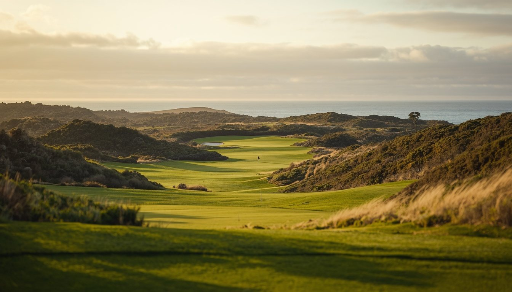
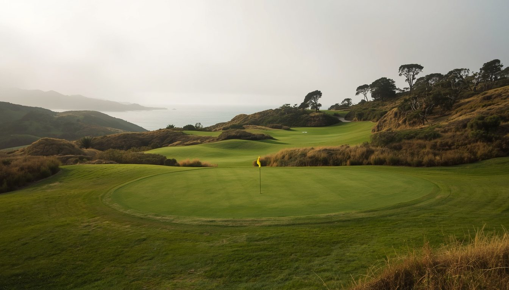
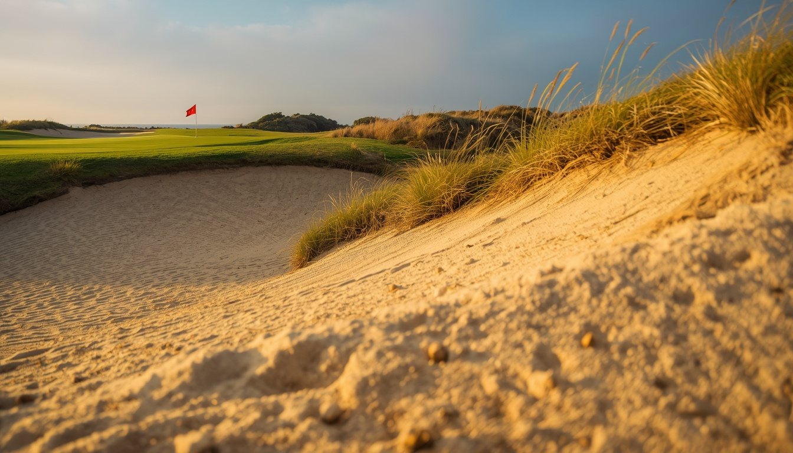
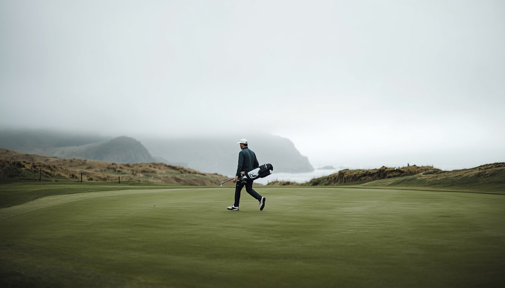
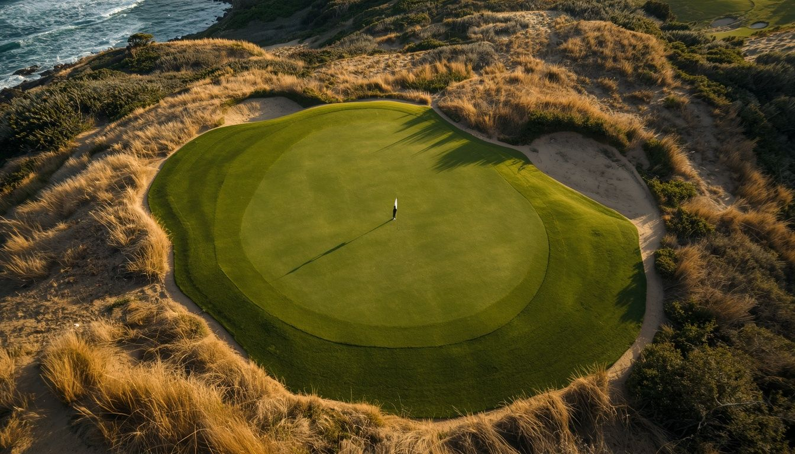
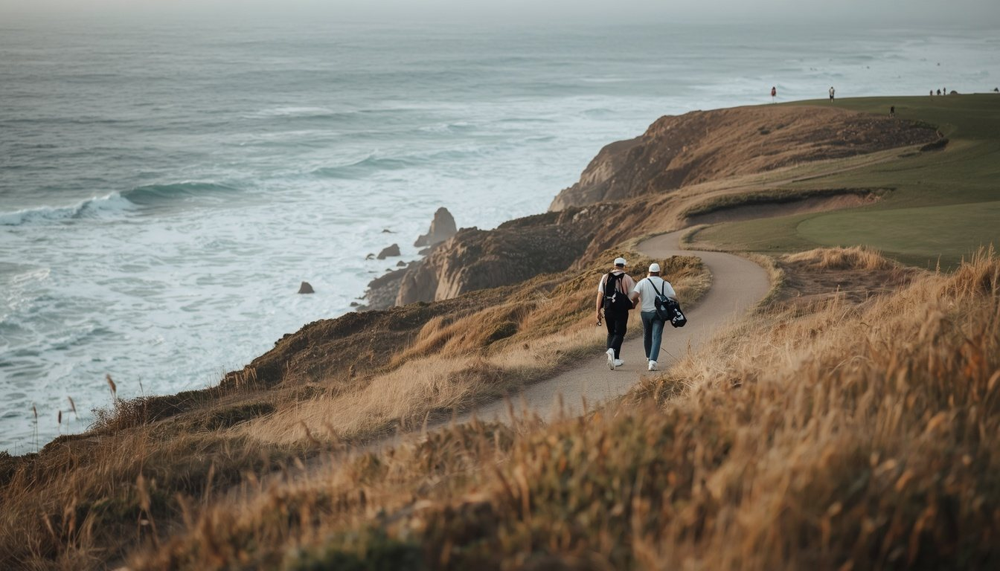
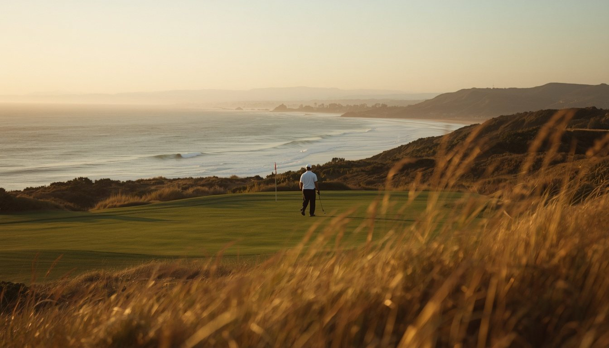
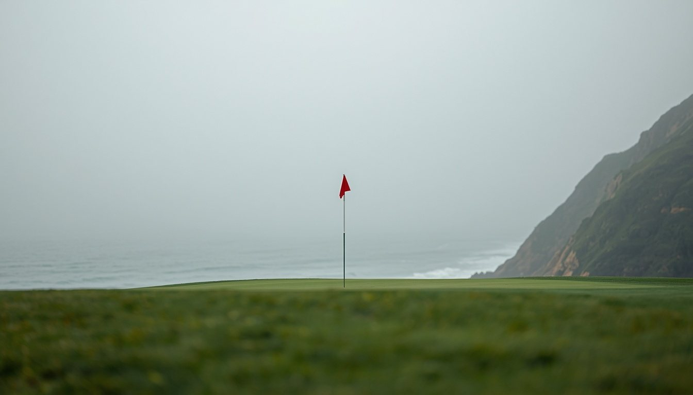
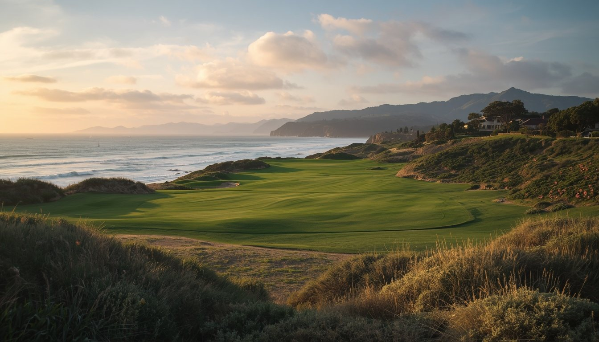

The course · hole by hole
Walk the course.
All eighteen holes carry their own image, arranged as a walk — an inland front nine, the reveal at the turn, the ocean stretch (holes 10–14), and the closing run home. The composition changes hole to hole (wide landscape, tee and approach views, green complexes, and the ocean-edge stages) so the round never repeats one frame.
AI reference Every hole image is a temporary AI placeholder, to be replaced with verified Sandpiper photography.
Wind and the marine layer can change quickly on the bluff — check current conditions before play.
Holes
1
2
3
4
5
6
7
8
9
10
11
12
13
14
15
16
17
18
▎ Ocean stretch, holes 10–14
Reference only · AI-generated · temporary placeholder
1
Front nine
The opening hole
Par 5
Yardage Black · Gold · Silver · Copper 530 · 511 · 495 · 454
Stroke index Men's handicap 9
Front nine
Reference only · AI-generated · temporary placeholder
Par 4
Yardage Black · Gold · Silver · Copper 471 · 447 · 402 · 376
Stroke index Men's handicap 1

Reference only · AI-generated · temporary placeholder
Par 4
Yardage Black · Gold · Silver · Copper 430 · 407 · 387 · 353
Stroke index Men's handicap 3
4
Front nine
Rolling ground, away from the sea

Reference only · AI-generated · temporary placeholder
Par 3
Yardage Black · Gold · Silver · Copper 258 · 226 · 196 · 165
Stroke index Men's handicap 7
Reference only · AI-generated · temporary placeholder
Par 5
Yardage Black · Gold · Silver · Copper 513 · 495 · 483 · 430
Stroke index Men's handicap 13

Front nine
Reference only · AI-generated · temporary placeholder
Par 3
Yardage Black · Gold · Silver · Copper 195 · 173 · 155 · 125
Stroke index Men's handicap 17
Front nine
Reference only · AI-generated · temporary placeholder
Par 4
Yardage Black · Gold · Silver · Copper 394 · 368 · 357 · 333
Stroke index Men's handicap 15

Front nine
Reference only · AI-generated · temporary placeholder
Par 4
Yardage Black · Gold · Silver · Copper 399 · 370 · 362 · 350
Stroke index Men's handicap 11
Reference only · AI-generated · temporary placeholder
Par 4
Yardage Black · Gold · Silver · Copper 420 · 401 · 393 · 368
Stroke index Men's handicap 5
The ocean stretch · holes 10–14
Reference only · AI-generated · temporary placeholder
10
The ocean stretch · holes 10–14
The turn to the water
Par 4
Yardage Black · Gold · Silver · Copper 390 · 345 · 321 · 315
Stroke index Men's handicap 6
The Pacific On the ocean stretch (holes 10–14) In play
Reference only · AI-generated · temporary placeholder
11
The ocean stretch · holes 10–14
Par 3
Yardage Black · Gold · Silver · Copper 228 · 202 · 172 · 148
Stroke index Men's handicap 12
The Pacific On the ocean stretch (holes 10–14) In play
12
The ocean stretch · holes 10–14
Hole 12
Reference only · AI-generated · temporary placeholder
Par 4
Yardage Black · Gold · Silver · Copper 347 · 325 · 306 · 252
Stroke index Men's handicap 18
The Pacific On the ocean stretch (holes 10–14) In play
Reference only · AI-generated · not Sandpiper · not production-cleared
13
Par 5 · the ocean stretch
Par 5
Yardage Black · Gold · Silver · Copper 532 · 455 · 405 · 392
Stroke index Men's handicap 4
The Pacific A playing condition, not a backdrop Green sits toward the water
Go for it
A good drive tempts a second shot at the green — the reward sits out toward the water, and so does the trouble.
Lay up
Play inland and wedge on. The safe line keeps the Pacific on your shoulder, not in your card.
Summon the nerve to go for the green in two, or take your five and walk to fourteen.
Character paraphrased from Golf Digest course profile (panelist notes).
Front 3,610
Back 3,529
Total par 72
Yards (Black) 7,159
See the full scorecard → · one data source feeds both the tour and the card.

The green, perched — the edge is the hazard.
Reference only · AI-generated

The ocean stretch · holes 10–14
Reference only · AI-generated · temporary placeholder
14
The ocean stretch · holes 10–14
Along the bluff
Par 4
Yardage Black · Gold · Silver · Copper 445 · 425 · 385 · 330
Stroke index Men's handicap 2
The Pacific On the ocean stretch (holes 10–14) In play

Reference only · AI-generated · temporary placeholder
15
The closing stretch
Turning for home
Par 5
Yardage Black · Gold · Silver · Copper 602 · 582 · 540 · 471
Stroke index Men's handicap 10
16
The closing stretch
Hole 16

Reference only · AI-generated · temporary placeholder
Par 4
Yardage Black · Gold · Silver · Copper 395 · 373 · 348 · 337
Stroke index Men's handicap 8
The closing stretch
Reference only · AI-generated · temporary placeholder
17
The closing stretch
Hole 17
Par 4
Yardage Black · Gold · Silver · Copper 429 · 374 · 353 · 304
Stroke index Men's handicap 14

Reference only · AI-generated · temporary placeholder
Par 3
Yardage Black · Gold · Silver · Copper 181 · 167 · 136 · 99
Stroke index Men's handicap 16